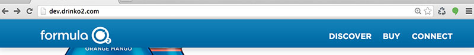
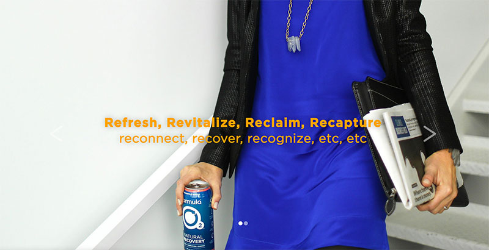
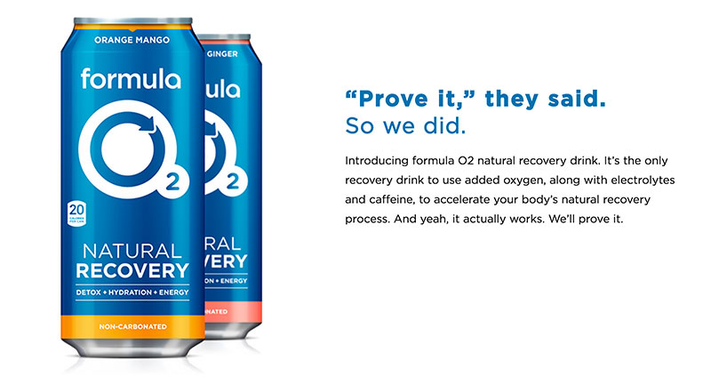
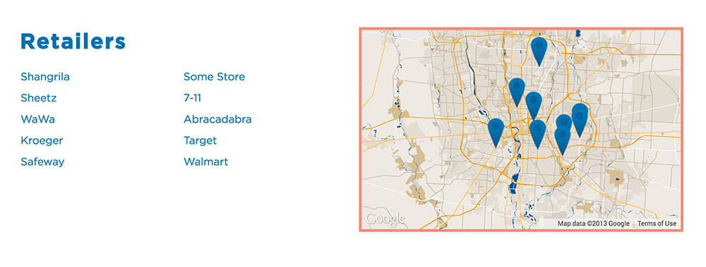
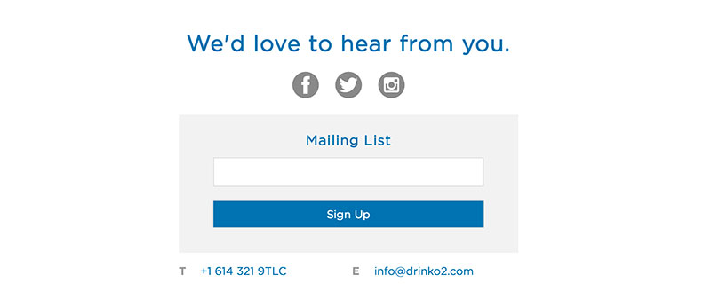
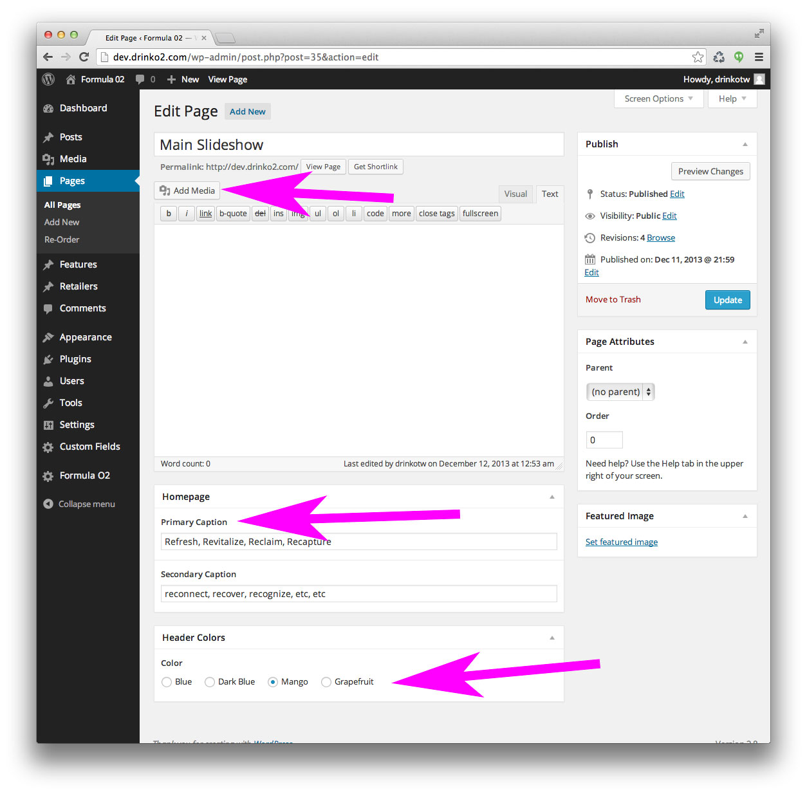
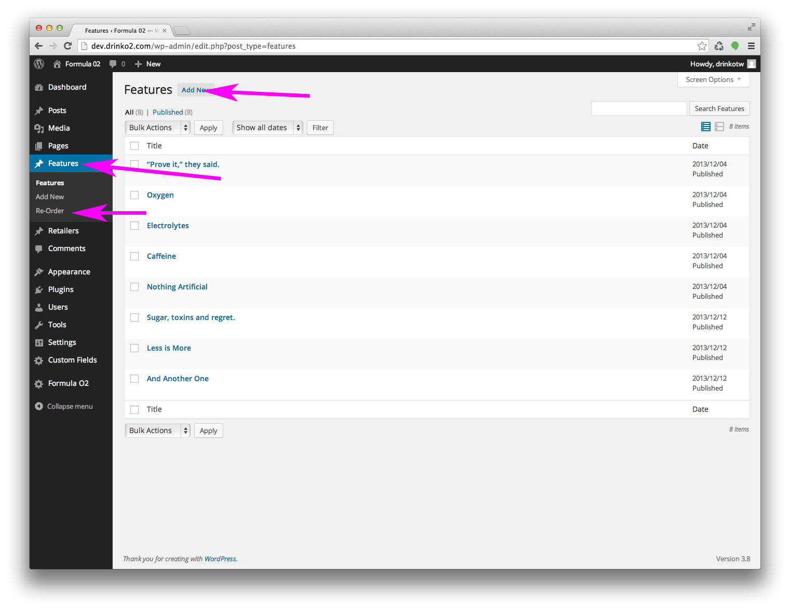
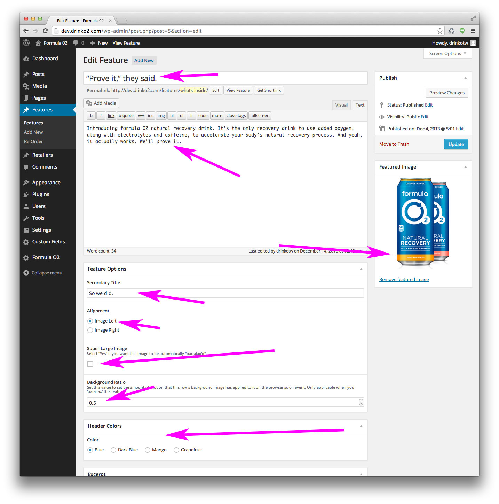
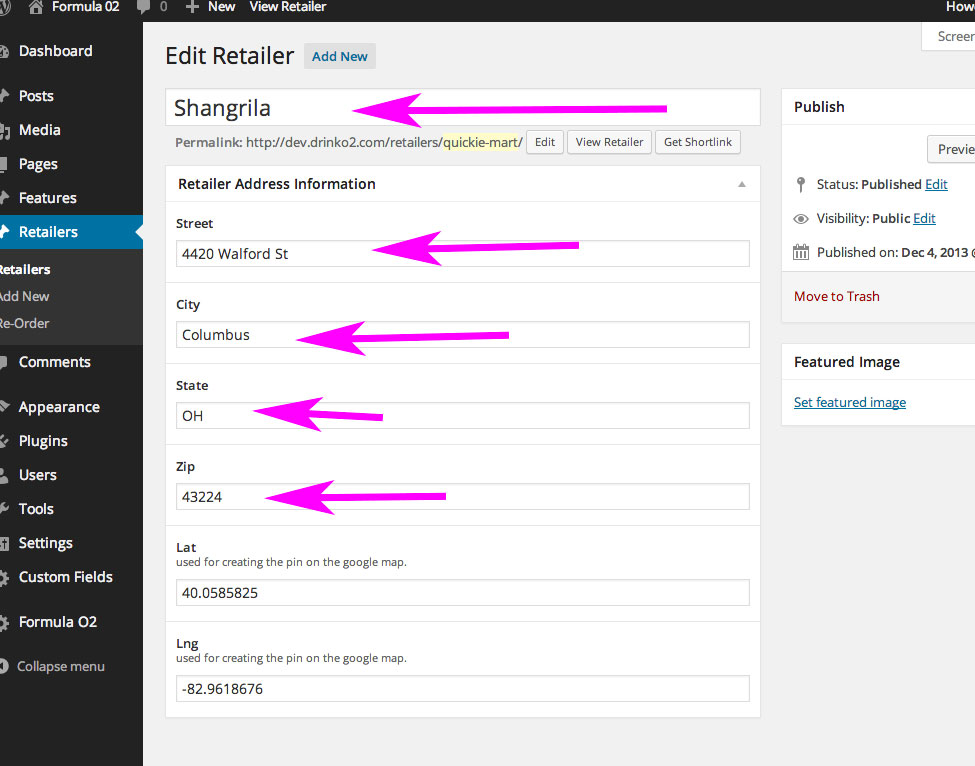
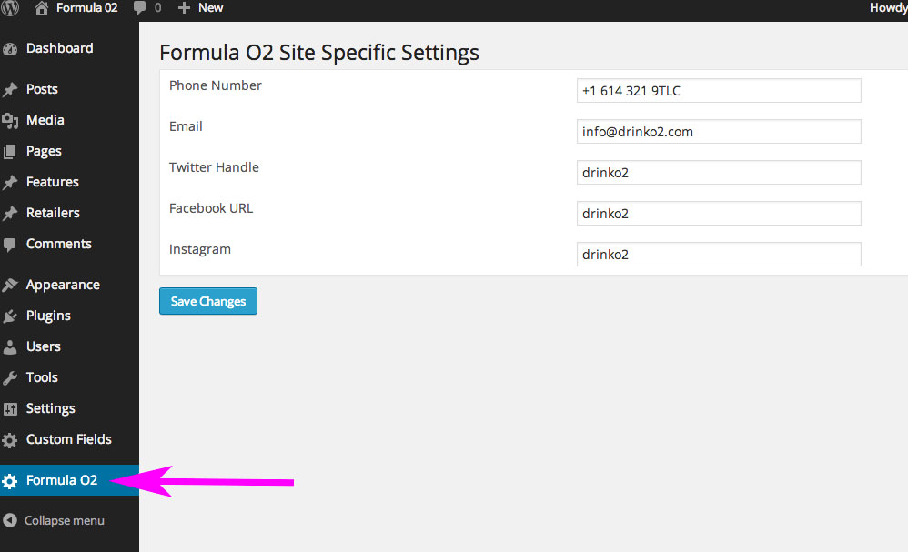

FORMULA O2
Wordpress Walkthrough
presented by MSMK
Overview and Architecture.
We've made it really easy for you to manage the site
The CMS is ready for you to use
That link goes to the development site. The live site will have it's own CMS at drinko2.com/wp-adminThe Technical Stuff
A very quick breakdown of the technology we've leveraged on drinko2.com
Wordpress
Front End Engineering
The Parts of the Website
Header
Slideshow
Features
Retailers
Connect
Footer
The Header
- Logo sends user "back to top"
- Header language is static
- We can update it for you, no problem
- Next phase we can tie the header into WP
Slideshow

Slideshow
- Pages > Main Slideshow > Add Media
- Click the "upload media" tab.
- Upload imagery
- Drag and drop to reorder
- Be sure to set the media scope to "uploaded to this page"
Add captioning and colors to fields at the bottom of the Main Slideshow screen.
Features

Features
Adding, Editing and Reordering
- Select "features" from the side nav
- "Add new" to create a new one.
- Click title to edit existing feature
- Select Re-order to drag and drop the arrangement
Feature Content Editing

Feature Content Editing
- Add title
- Create the text content
- Set the featured image
- Optional secondary title
- Choose the alignment of the feature
- Select "super large" if you want this feature to be Parallax'd
- Update the background ratio if you wish to adjust the motion settings
- Choose color of the header text
Retailers

Retailers
- Add Name
- Street
- City
- State
- Zip
Latitude and Longitude are added automatically
Connect & Footer

Connect & Footer
Email sign up form goes to Mailchimp
Footer copy is static until phase 2.
The End!

For now